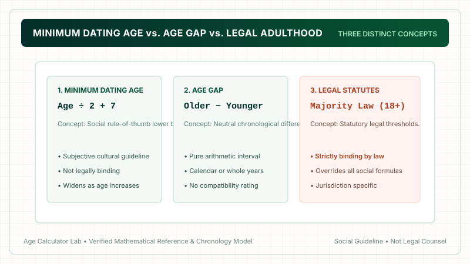

The minimum dating age is calculated using the formula: (Your Age ÷ 2) + 7. For example, if you are 40 years old: 40 ÷ 2 = 20, plus 7 = 27. The youngest age aligned with this convention is 27 years old. However, for anyone under age 22, an absolute legal floor of 18 strictly applies. You can calculate your exact lower and upper boundaries instantly using our Dating Age Calculator.
1. What Is Minimum Dating Age?
The concept of a minimum dating age answers a very specific demographic question: "What is the youngest age a person can date without the age gap being perceived as socially unconventional?"
In modern culture, this is evaluated using the first half of the famous half-your-age-plus-seven rule. By tying the minimum acceptable partner age to your own chronological age, the rule scales as you grow older.
2. The Formula to Calculate the Youngest Age
The arithmetic required to calculate the minimum dating age consists of dividing your age by two and adding seven:
The Minimum Dating Age Formula
Where Your Age is your completed age in whole chronological years.

3. Step-by-Step Worked Calculation
Let's walk through how to calculate the youngest age for several different ages:
Example 1: Age 28
- Step 1: Divide by 2 ➔
28 ÷ 2 = 14 - Step 2: Add 7 ➔
14 + 7 = 21 - Result: A 28-year-old has a minimum dating age of 21 years old (a gap of 7 years).
Example 2: Age 40
- Step 1: Divide by 2 ➔
40 ÷ 2 = 20 - Step 2: Add 7 ➔
20 + 7 = 27 - Result: A 40-year-old has a minimum dating age of 27 years old (a gap of 13 years).
Example 3: Age 52
- Step 1: Divide by 2 ➔
52 ÷ 2 = 26 - Step 2: Add 7 ➔
26 + 7 = 33 - Result: A 52-year-old has a minimum dating age of 33 years old (a gap of 19 years).
4. Minimum Dating Age Chart (Ages 18 to 70)
Use this reference table to find the calculated minimum age across common adult ages:
| Your Current Age | Calculated Minimum | Effective Social Minimum | Max Allowable Younger Gap |
|---|---|---|---|
| 18 | 16.0 | 18 (Adult Floor) | 0 years |
| 20 | 17.0 | 18 (Adult Floor) | 2 years |
| 22 | 18.0 | 18 years | 4 years |
| 24 | 19.0 | 19 years | 5 years |
| 26 | 20.0 | 20 years | 6 years |
| 28 | 21.0 | 21 years | 7 years |
| 30 | 22.0 | 22 years | 8 years |
| 34 | 24.0 | 24 years | 10 years |
| 38 | 26.0 | 26 years | 12 years |
| 42 | 28.0 | 28 years | 14 years |
| 46 | 30.0 | 30 years | 16 years |
| 50 | 32.0 | 32 years | 18 years |
| 60 | 37.0 | 37 years | 23 years |
| 70 | 42.0 | 42 years | 28 years |
5. The Critical 18+ Adult Threshold
At what precise age does the minimum dating age formula intersect with the age of legal majority (18)? We can solve this with simple algebra:
Age / 2 + 7 = 18
Age / 2 = 18 − 7
Age / 2 = 11
Age = 22
This mathematical proof reveals a vital finding: only at age 22 does the formula naturally produce 18. For anyone aged 18, 19, 20, or 21, the formula outputs numbers between 16 and 17.5.
6. Why Outputs Below 18 Are Not Recommendations
This is where arithmetic must strictly defer to the law. Statutory age of majority laws exist to protect minors from exploitation and unequal power dynamics. Under no circumstances should an adult interpret a mathematical output below 18 as an endorsement to date a minor.
Responsible age calculators apply an absolute boundary floor: Effective Minimum = max(18, Age ÷ 2 + 7). Legal statutes strictly supersede social folk formulas.

7. Minimum Dating Age vs Age Gap vs Legal Age
To avoid confusion, remember how these three concepts interact:
- Minimum Dating Age (Social Norm): A cultural heuristic designed to evaluate perceived social acceptability.
- Age Gap (Chronological Measurement): Pure arithmetic subtraction (
Older − Younger) measured via an Age Gap Calculator. - Legal Age (Statutory Law): Binding government statutes governing consent and legal adulthood.
8. Why Does the Allowable Gap Grow with Age?
Notice from the chart that a 24-year-old can only date 5 years younger, but a 50-year-old can date 18 years younger! Why does the gap widen?
Sociologists explain that as adults mature, life stages become increasingly broad. The developmental gulf between a 19-year-old college freshman and a 24-year-old working professional is immense. In contrast, the life stage difference between a 40-year-old and a 50-year-old is comparatively subtle, as both are established adults managing career, home, and personal independence.
8. Life Stage Disparities Across the Minimum Boundary
When exploring the minimum dating age, the central question is rarely about mathematics—it is about life stage alignment. An age gap of 8 years means something entirely different depending on where both individuals stand along their life course.
Consider three distinct scenarios along the minimum boundary:
Scenario A: Early Adulthood (Age 24 Dating a 19-Year-Old)
At age 24, the formula outputs 24 ÷ 2 + 7 = 19. While both individuals are legal adults, this 5-year gap frequently spans a significant developmental threshold. The 19-year-old is often a college sophomore or entry-level worker still experiencing adolescent-to-adult neurological maturation, whereas the 24-year-old may have completed university, entered full-time employment, and achieved financial self-sufficiency. Small gaps during the early twenties can feel substantial in daily life.
Scenario B: Mid-Adulthood (Age 38 Dating a 26-Year-Old)
At age 38, the formula outputs 38 ÷ 2 + 7 = 26, an allowable gap of 12 years. Here, both partners have fully developed prefrontal cortexes and have lived independently. However, secondary life-stage friction can emerge regarding long-term horizons: the 38-year-old may feel urgent pressure regarding biological family planning or homeownership, while the 26-year-old may still be exploring career pivots or social lifestyles.
Scenario C: Mature Adulthood (Age 54 Dating a 34-Year-Old)
At age 54, the formula outputs 54 ÷ 2 + 7 = 34, an allowable gap of 20 years. In this scenario, both partners are established adults with distinct career histories. The challenges here often center on long-term generational transitions: retirement timing, eldercare responsibilities, energy levels, and health considerations as one partner enters senior citizenship decades ahead of the other.
9. Psychological & Social Dynamics of Dating Younger
Why does society scrutinize relationships at the minimum dating boundary more heavily than peer relationships? Sociologists point to three core psychological phenomena:
- Perceived Power Asymmetries: When one partner is significantly older, observers often assume an inherent imbalance in financial power, professional influence, or emotional leverage. Ensuring that both partners possess equal decision-making autonomy is vital for relational health.
- Cultural Assumptions & Stereotypes: Couples with wide age gaps frequently navigate unsolicited commentary from peers, family members, or social circles who project traditional stereotypes onto their partnership.
- Shared Cultural Touchstones: Partners who grew up in different decades experienced different childhood media, technological evolutions, and historical milestones. Building shared humor and cultural resonance requires intentional communication.
10. A Practical Checklist Before Dating Near the Minimum Boundary
If you are considering dating someone near your calculated minimum dating age, ask yourself these practical evaluation questions:
- Are both partners full legal adults? An absolute affirmative answer is non-negotiable.
- Is decision-making power truly balanced? Does the older partner dominate finances, housing, or social choices, or do both individuals contribute equally?
- Are timelines for children and marriage transparent? Have both partners candidly discussed biological clocks, family ambitions, or the desire to remain child-free?
- Can you comfortably integrate each other's friend groups? Do you feel at ease spending time with each other's peer circles, or is there persistent social friction?
9. Real-World Applications & Social Dynamics
In modern dating, people consult minimum dating age calculators primarily for reassurance when exploring relationships with younger partners. While the formula provides an interesting social benchmark, successful partnerships depend on mutual values, shared lifestyle goals, and emotional maturity rather than satisfying an equation.
10. Using the Minimum Dating Age Tool
To calculate both your minimum and maximum dating boundaries without doing manual math, visit our free interactive Dating Age Calculator.
11. Frequently Asked Questions
What is the minimum dating age formula?
The minimum dating age formula is: Minimum Age = (Your Age ÷ 2) + 7. For example, for a 40-year-old: 40 ÷ 2 + 7 = 27 years old.
What is the youngest age a 30-year-old can date?
Using the formula: 30 ÷ 2 + 7 = 15 + 7 = 22 years old. The youngest rule-aligned age for a 30-year-old is 22.
At what age does the minimum dating age formula reach 18?
The formula reaches exactly 18 at age 22: (22 ÷ 2) + 7 = 11 + 7 = 18. Anyone younger than 22 produces a mathematical result below 18.
Can an adult use this rule to date a minor?
No. Statutory laws regarding the age of majority (18+) strictly govern relationships. Outputs below 18 from this mathematical formula must never be treated as adult dating recommendations.
What is the difference between minimum dating age and age gap?
Minimum dating age is a normative threshold indicating the youngest partner age for one individual. An age gap is simply the numerical difference between two specific people.
Why does the allowable age difference widen as you get older?
Because human maturation and life stages level off after young adulthood. A 10-year difference between 40 and 30 involves established adults, whereas a 10-year difference at age 25 involves a minor.
How does the formula handle odd ages like 27 or 35?
Dividing odd ages results in a half-year (e.g., 35 ÷ 2 + 7 = 24.5). In practice, people either count someone aged 24.5 or round up to 25.
Is there a maximum dating age as well?
Yes. The inverse formula calculates the upper boundary: Maximum Dating Age = (Your Age − 7) × 2.
12. Final Takeaway
The minimum dating age formula provides a useful mathematical heuristic for understanding social age conventions. However, an absolute adult floor of 18 must always be honored, and real-world relationship success relies on mutual character, emotional health, and shared respect.

Methodology & Verification Standards
- Lower Bound Algorithm:
Min = (Age ÷ 2) + 7. - Legal Adulthood Guardrail:
Effective Minimum = max(18, calculated_min). - Editorial Purpose: Demographic analysis and cultural arithmetic reference.
- Review Date: October 2026.